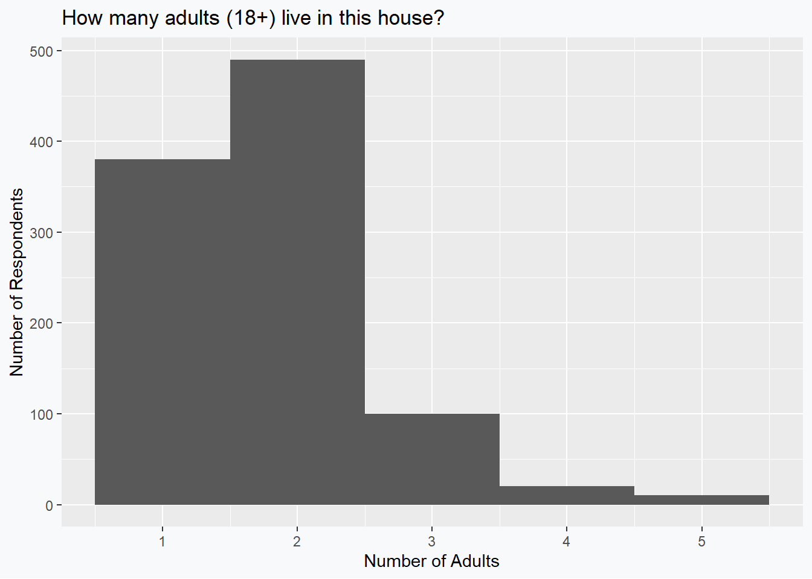
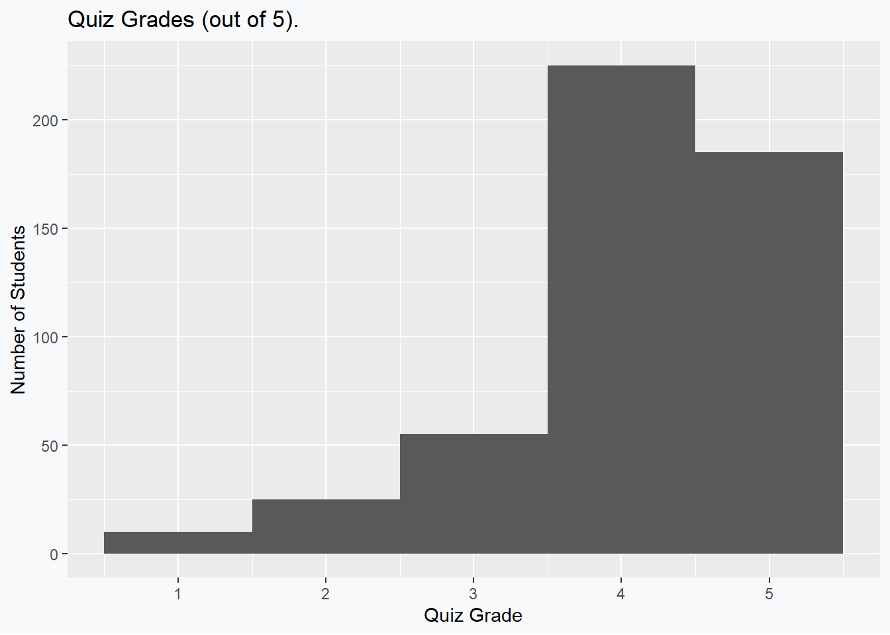
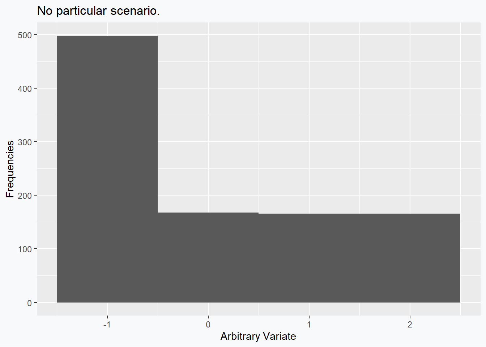
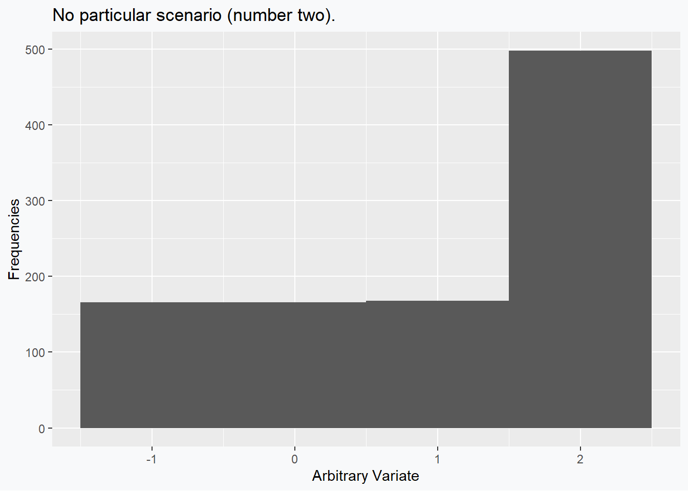
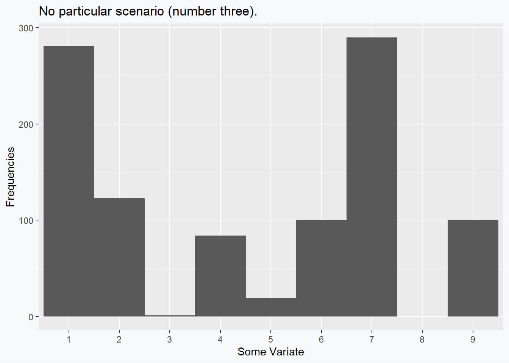
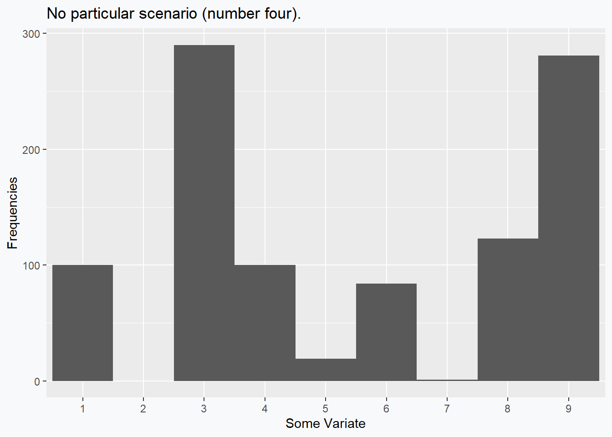

The (lack of a) Relationship between Mean, Median, and Skewness
statistics
teaching
misconceptions
There is a commonly taught ‘rule-of-thumb’ that states that we can determine the skewness of a distribution based on the relative location of the mean and the median. This is not true.
This term I had the pleasure of teaching an introductory statistics course at the University of Waterloo. In preparing to run the course I came to realize (and this is by no means a unique realization) that there is a lot of incorrect (or misleading) information aimed at people learning statistics. One particularly stand-out example is the idea that we can use the mean and median of a sample to infer skewness.
If the mean is less than the median the data exhibit a left (negative) skew. If the mean is greater than the median the data exhibit a right (positive) skew.
Now, all told this is not the worst offense of this kind, but I think it exemplifies a concerning trend. There is an understandable desire for easy to follow rules in statistics. It is my opinion that, generally speaking, such rules do not exist. This same tendency leads to an uncritical acceptance of arbitrary significance levels and inappropriate applications of approximation theorems. So, in the interest of the bigger picture, let’s correct this misconception!
This point has previously been made (von Hippel 2005), but we can compile some explicit examples here.
Positive Skew; Mean < Median
Consider responses to the question ``How many adults (18+) live in this house?’’ for residents across Canada. We can imagine asking 1000 households for this response and it seems plausible that we would have data which look something like:
Based on these data, we can see fairly clearly that the median is going to be 2 and that the data exhibit a positive skewness. The mean, however, is given by 1.79 which evidently violates the supposed rule of thumb.
Negative Skew; Median < Mean
Consider a quiz that is given to students in an introductory statistics class that is marked out of 5. If we assume that 500 students are enrolled in the course, and they all write the quiz, then the following grade distribution seems plausible:

Based on these data, we can see fairly clearly that the median is going to be 4 and that the data exhibit a negative skewness. The mean, however, is given by 4.1 which evidently violates the supposed rule of thumb.
Positive Skew; Mean = Median
Dropping the pretense of real data we can, as may be obvious now, begin to generate arbitrary examples that violate the remaining configuartions of the rules. The following data are selected so that the skew is positive (0.6491939), while the mean (0) and the median (0) are exactly equal.

Perhaps the interested reader could come up with an example situation for these data.
Negative Skew; Mean = Median
The previous example can of course be mirrored exactly so as to produce a negative sample skewness (-0.6491939), while the mean (1) and the median (1) are exactly equal.

Perhaps the interested reader could come up with an (alternative) example situation for these data.
No Skew; Mean < Median (< Mode)
The remaining scenarios to deconstruct involve distributions which have no skew, but which have a mean and median which are not equal. These are fairly straightforward to construct as well. In this example we can see that the skewness (0) is 0, while the mean (4.5) and the median (5) differ.

No Skew; (Mode <) Median < Mean
Once again, other alternatives are possible, by why reinvent the wheel when we can simply mirror our previous situation? In this example we can see that the skewness (0) is 0, while the mean (5.5) and the median (5) still differ, but differently than last time.

General Lessons and Takeaways
These examples tended to exploit the fact that discrete distributions behave strangely. We could have also used multimodal distributions to a similar effect. While these distributions often feel contrived when compared to our nice, named distributions, I would wager that histograms like those presented are, in fact, more common in an actual data analysis than the nice, smooth, well-behaved densities we like to work with.
The keen reader may wish to pushback and claim that adding in the relationship with the mode will remedy these supposed counter examples – unfortunately, no. For one, especially when working with continuous densities, it becomes trivial to add a unique mode anywhere relative to the mean and median, without substantively changing these values. Second, while the first few examples had their mode coinciding with the median, the last two demonstrate that we can have a strict ordering (Mean < Median < Mode or Mode < Median < Mean) and end up without any skew in our data.
So, are there any rules we can follow? If the distribution is Pearson family, the standard rule does apply (MacGillivray 1981). Beyond that, I think that the common refrain is more helpful as an intuition than it is as a rule, and I think that this is true of many statistical absolutes that are commonly taught.
References
Hippel, Paul T von. 2005. “Mean, Median, and Skew: Correcting a Textbook Rule.” Journal of Statistics Education 13 (2). https://doi.org/10.1080/10691898.2005.11910556.
MacGillivray, H. L. 1981. “The Mean, Median, Mode Inequality and Skewness for a Class of Densities.” Australian Journal of Statistics 23 (2): 247–50. https://doi.org/10.1080/10691898.2005.11910556.